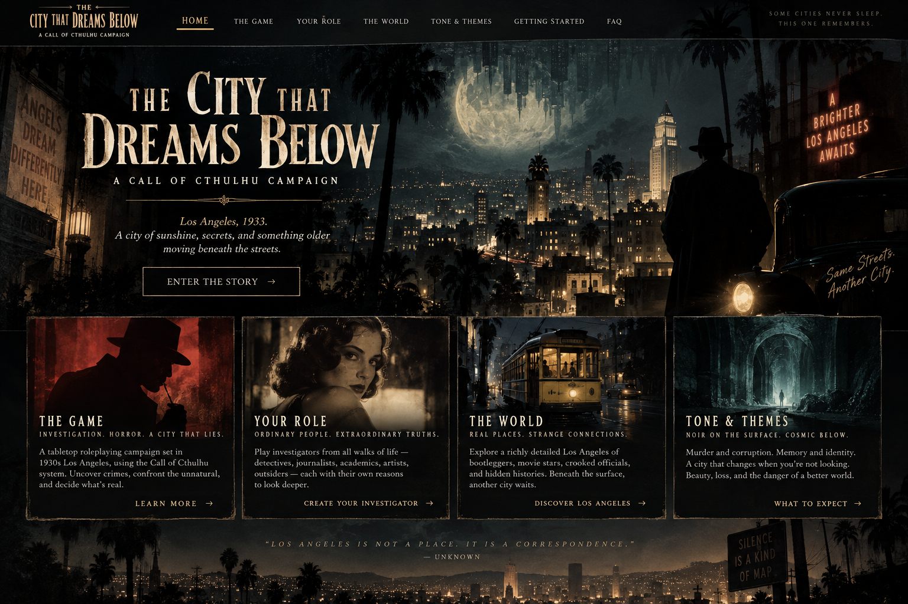

THE
CITY THAT
DREAMS BELOW
Los Angeles, 1926.
A city of sunshine, secrets, and something older
moving beneath the streets.
LOS ANGELES
AWAITS
Another City.
THE GAME
INVESTIGATION. HORROR. A CITY THAT LIES.
A mystery-first Call of Cthulhu campaign in 1926 Los Angeles. Uncover crimes, follow crooked money, and decide how far you are willing to go when the impossible starts leaving evidence.
LEARN MORE →YOUR ROLE
ORDINARY PEOPLE. EXTRAORDINARY TRUTHS.
Play investigators from all walks of life: detectives, journalists, academics, artists, mechanics, outsiders, and others with reasons to keep looking when sensible people would walk away.
CREATE YOUR INVESTIGATOR →THE WORLD
REAL PLACES. STRANGE CONNECTIONS.
Explore a Los Angeles of streetcars, studio lots, speakeasies, new subdivisions, harbor warehouses, civic ambition, and neighborhoods where the city sometimes remembers a different version of itself.
DISCOVER LOS ANGELES →TONE & THEMES
NOIR ON THE SURFACE. COSMIC BELOW.
Murder and corruption. Memory and identity. Beauty, loss, loyalty, and the danger of a better world. Horror lives beside humor, friendship, courage, and the stubborn choice to care.
WHAT TO EXPECT →“LOS ANGELES IS NOT A PLACE. IT IS A CORRESPONDENCE.”
— attribution unknown
THE GAME
A DETECTIVE STORY WITH A CRACK IN REALITY
This campaign uses Call of Cthulhu 7th Edition. Most investigations begin with something painfully human: a murder, disappearance, blackmail scheme, smuggling job, labor dispute, corrupt deal, or frightened person asking for help.
The first answers will usually make sense. Greed. Revenge. Fear. Money. Power. Then one fact refuses to fit.
You are not expected to be occult experts or action heroes. The game rewards asking good questions, following evidence, making allies, taking risks, and deciding what your investigator is willing to sacrifice for the truth.
YOUR ROLE
YOU ARE SOMEONE WHO KEEPS LOOKING
Investigators can come from almost anywhere in Los Angeles life: private detectives, reporters, photographers, attorneys, physicians, police officers, federal agents, studio employees, performers, academics, mechanics, chauffeurs, rail workers, socialites, clergy, criminals, or nightclub staff.
Your occupation matters, but your connections matter just as much. Before play, each investigator will establish another investigator they already know, one useful Los Angeles contact, something that anchors them to ordinary life, and a debt, secret, or failure that can complicate matters.
Most importantly, your character needs a reason to continue after the first undeniable encounter with something impossible.
THE WORLD
LOS ANGELES IS INVENTING ITSELF
It is 1926. Los Angeles is exploding outward. Orchards become subdivisions. New roads and rails decide which neighborhoods thrive. Hollywood manufactures dreams. Prohibition makes criminals rich. Politicians, developers, police, unions, bootleggers, newspapers, and old money all compete to decide what the city will become.
The campaign may take you through Downtown offices and hotels, Westlake streets, Hollywood studios, Central Avenue clubs, San Pedro warehouses, Venice piers, the Los Angeles River, and the open edges of the San Fernando Valley.
And sometimes the city will disagree with itself. A building may have always had another floor. A photograph may contain someone who was never there. A stranger may remember you fondly from years before you arrived.
TONE & THEMES
HARD-BOILED, HUMAN, AND COSMIC
The campaign blends noir crime drama with gradual cosmic horror. Violence is dangerous. Institutions protect themselves. Information has a price. People may ask you to work with someone unpleasant because the alternative is worse.
But this is not a campaign of nonstop misery. Loyalty, humor, friendship, courage, tenderness, and sacrifice matter. They matter more because the city makes them expensive.
Major themes include memory, identity, reinvention, corruption, civic power, belonging, and the unsettling possibility that a “better” version of a person or a city may be waiting to replace the imperfect one.
GETTING STARTED
WHAT YOU NEED TO BRING
Bring
- A concept for an investigator you want to inhabit for a long campaign.
- Curiosity. Following strange details is the engine of play.
- A willingness to collaborate and share spotlight.
- A few personal anchors your investigator genuinely cares about.
You do not need
- Expert knowledge of 1920s Los Angeles.
- Knowledge of the Cthulhu Mythos.
- A combat-focused character.
- To “solve” every mystery before acting.
We will establish boundaries together before play. Anyone can pause, redirect, or fade a scene that becomes uncomfortable. The goal is frightening fiction, not an unpleasant table.
FAQ
BEFORE YOU BOARD THE CAR
Is this Pulp Cthulhu?
No. The default is standard Call of Cthulhu 7th Edition. You are capable people, but danger remains dangerous and combat is not the assumed answer.
Do I have to make a detective?
No. The group benefits from different professions, social circles, skills, and ways of getting information.
Will the campaign be very dark?
It will contain murder, organized crime, corruption, psychological distress, body horror, and threats to people investigators care about. We will set boundaries before play, and the campaign deliberately leaves room for humor, warmth, and victories worth celebrating.
Can my choices change the larger story?
Yes. Cases are connected, but the campaign is designed so successes, failures, alliances, and clever plans change what happens next.
What should I know about the mystery?
Almost nothing. The most useful starting assumption is simply this: Los Angeles is changing, and sometimes the evidence suggests it has changed before.